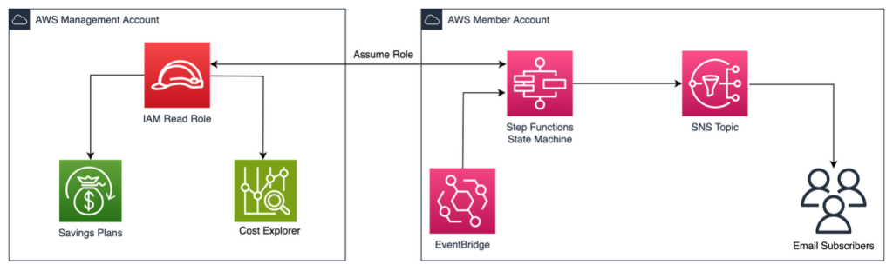

By Syed Muhammad Tawha and Dan Johns | Date: 26/06/2025 | Amazon Simple Notification Service (SNS), AWS Cloud Financial Management, AWS CloudFormation, Cloud Cost Optimization
As organizations grow, FinOps teams need a holistic view of AWS Savings Plans to optimize usage. This solution enables automated monitoring and setting up alerts to detect underutilized Savings Plans within their eligible return window.
When purchasing a Savings Plan, you commit to usage for 1 or 3 years. Savings Plans with an hourly commitment of ≤ $100 can be returned if purchased within the last 7 days and in the same calendar month, provided you have not exceeded the return limit. After the month ends (UTC time), that Savings Plan cannot be returned.
In this article, we provide AWS CloudFormation templates that create an AWS Step Functions state machine, Amazon Simple Notification Service (SNS) topic, Amazon EventBridge scheduler, and necessary AWS Identity and Access Management (IAM) roles to automatically monitor newly purchased Savings Plans and detect underutilized ones.
This solution follows AWS security best practices by separating deployment across two accounts. One CloudFormation stack will be created in the Management account to set up the necessary IAM roles to retrieve Savings Plans usage data. Another CloudFormation stack will be deployed in a chosen Member Account within your AWS Organization.
The CloudFormation stack in the Member Account creates a state machine that assumes a role in your Management Account and parses all Savings Plans in the Management Account, including those purchased across your entire organization. The workflow filters active Savings Plans by purchase date, focusing on plans purchased within the last 7 days and the current month. The system then evaluates their utilization rate and identifies plans below a predefined threshold.
The state machine will execute at the frequency you specify and use Amazon SNS to send email alerts to the addresses you provided when creating the CloudFormation stack. These alerts will contain details about underutilized Savings Plans and instructions on the return process.
 Figure 1: AWS Architecture - Member Account assumes read permissions from Management Account and triggers Step Function to send alerts via SNS.
In this section, we will deploy the resources for this solution in your account:
In this section, we will deploy resources for this solution in the chosen Member Account.
Log in to the AWS Management Console of the Member Account where you want to deploy the solution.
Deploy this CloudFormation Stack Launch Stack
Provide the Stack Name as new-sp-utilization-alert-member.
In the AlertEmails parameter, enter a comma-separated list of emails that will receive notifications about underutilized Savings Plans.
In the ManagementAccountId parameter, enter the 12-digit AWS Account ID of the Management Account.
In the ScheduleExpression parameter, specify the execution frequency for the Step Functions state machine in cron format (default is daily at 9 AM UTC).
In the UtilizationThreshold parameter, specify the minimum utilization rate for your Savings Plans. You will receive a notification when utilization drops below this threshold.
Click Next, check the acknowledgment box, and create the stack.
Wait until the stack completes and shows the status CREATE-COMPLETE.
You will receive an email to confirm subscription to notifications from the SNS topic created by this stack. Please confirm the subscription to start receiving notifications.
Access the Outputs tab of the created stack and record the values of ExecutionRoleArn and StateMachineArn, you will need them in the next section.
Log in to the AWS Management Console. Note: This must be the same account as entered in the ManagementAccountId parameter in the previous section.
Deploy this CloudFormation Stack Launch Stack
Provide the Stack Name as new-sp-utilization-alert-management.
In the ExecutionRoleArn parameter, provide the value copied from the stack outputs of the stack deployed in the Member Account.
In the StateMachineArn parameter, provide the value copied from the stack outputs of the stack deployed in the Member Account.
Click Next, check the acknowledgment box, and create the stack.
Wait until the stack completes and shows the status CREATE-COMPLETE.
Now that the Step Functions state machine and related resources have been deployed in the Member Account, we will test the implementation:
Log back in to the AWS Management Console of the Member Account where you deployed Part 1 of this solution.
Access the Resources tab in the CloudFormation stack and find the SavingsPlansAlerts Step Functions state machine. Click on the blue hyperlink.
You will be redirected to the Step Functions console. Click Start execution on the right.
View execution details in the Events section to monitor the state machine’s progress. If there are Savings Plans purchased within the last 7 days and current month, you will receive an email notification.
A successful execution is shown by a green box in the Graph view. If any Savings Plans fall below the specified utilization threshold, you will receive an email at the provided address.
All resources deployed for this solution can be deleted by deleting the CloudFormation stacks. You can delete the stack via the AWS Management Console or AWS CLI.
To delete the stack in the Management Account (CLI):
aws cloudformation delete-stack --stack-name new-sp-utilization-alert_management
To delete the stack in the Member Account (CLI):
aws cloudformation delete-stack --stack-name new-sp-utilization-alert_member
When you receive an alert about underutilized Savings Plans, you should review the usage details provided in the email notification. Analyze your utilization metrics against the original commitment when purchasing the Savings Plan, and investigate whether the low utilization was expected or due to other factors such as workload migration, architectural changes, or capacity demand miscalculations. Consider returning the Savings Plan if utilization remains below your threshold, the plan was purchased within the last 7 days, purchased in the current month, and has an hourly commitment ≤ $100. Record the reason for the return for future reference and planning.
This article guided you on how to use Savings Plan and Cost Explorer APIs to identify underutilized Savings Plans in your organization. Then, we illustrated how to use a Step Functions State Machine to filter Savings Plans purchased within the last 7 days and current month, which is critical because you can return Savings Plans within the eligible return period if they are not used effectively. For more details on returning a Savings Plan, refer to the document Returning a Purchased Savings Plan
| Syed Muhammad Tawha Syed Muhammad Tawha is a Principal Technical Account Manager at AWS, based in Dublin, Ireland. Tawha specializes in Storage, Resilience, and Cloud Cost Optimization. He is passionate about helping AWS customers optimize costs and improve performance. Outside of work, Tawha loves spending time with friends and family. |
|
| Dan Johns Dan Johns is a Senior Solutions Architect Engineer, supporting customers building on AWS and meeting business requirements. Outside of work, he enjoys reading, spending time with family, and automating household tasks. |